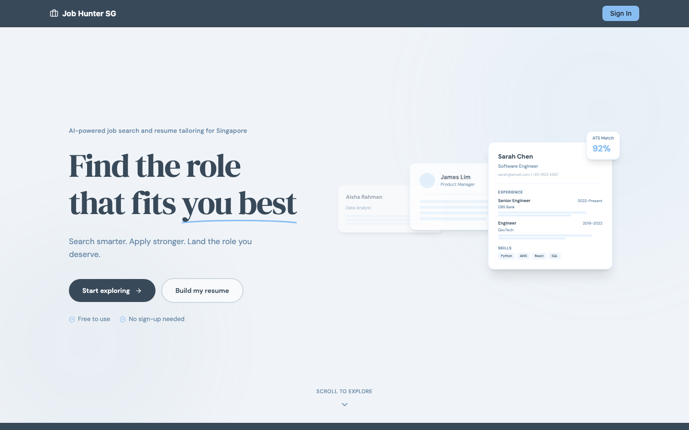
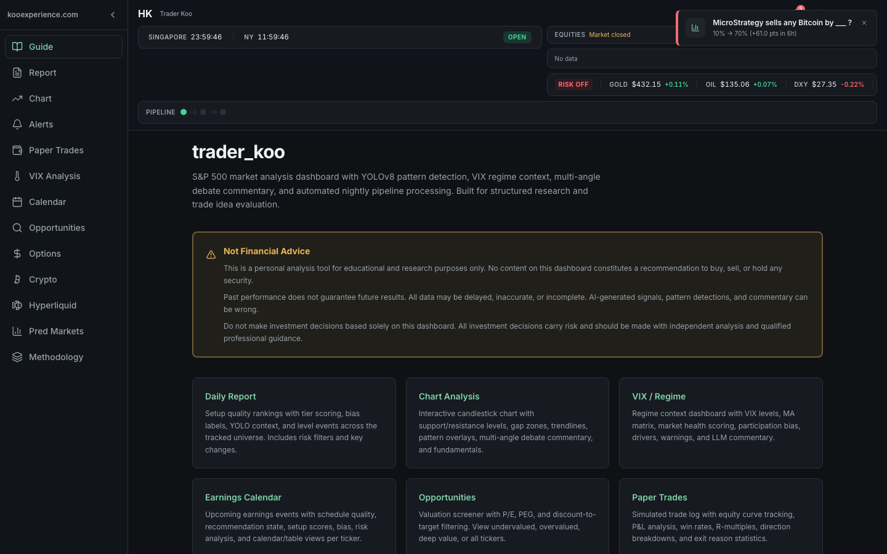
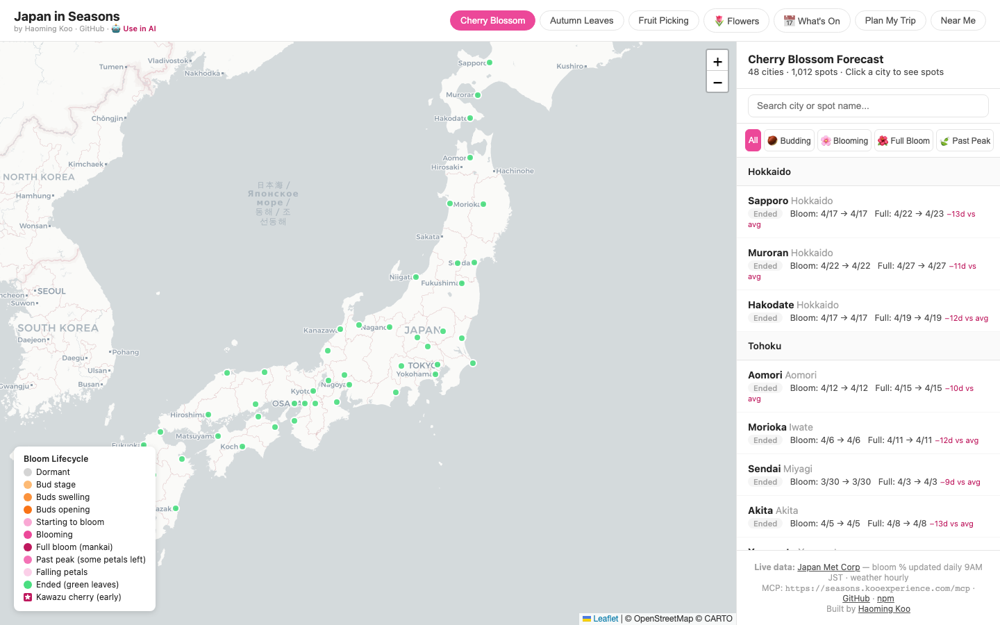
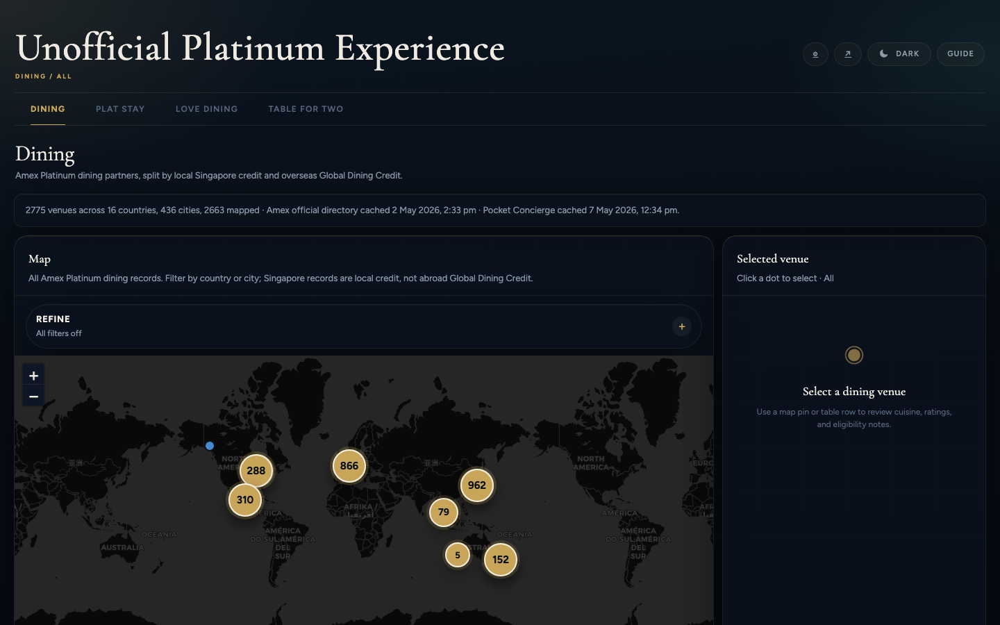
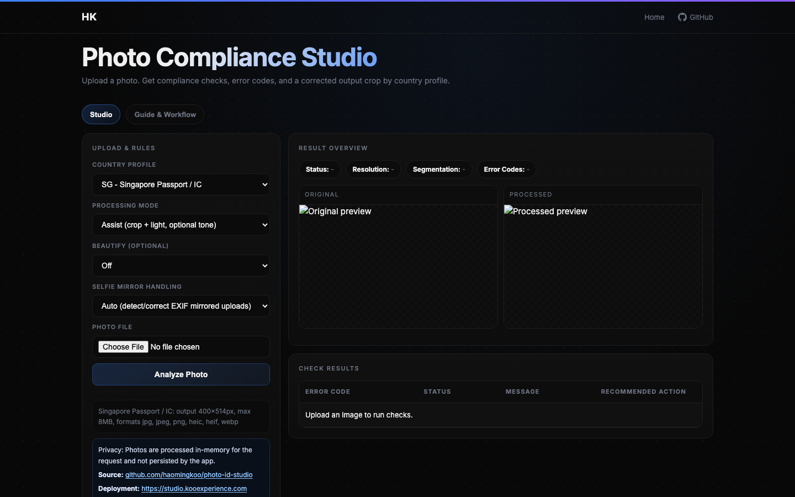

Clarify
Write the spec. Name the risk. Set the success check.
I build production LLM systems for messy work: RAG, agent workflows, evals, observability, and product UX. Based in Singapore.
Recruiter search: Haoming Koo, AI Engineer Singapore, Production LLM Systems, LangGraph, RAG, Evals, LLM Observability.
This is the pattern I bring to AI work. It keeps demos close to production.
Write the spec. Name the risk. Set the success check.
Use retrieval, tools, data, and source traces.
Build LangGraph-style flows with human review.
Add evals, observability, and failure handling.
I have worked around fabs, engineers, models, dashboards, and public users. The common thread is reliability.
Cross-site transformation across Singapore, Boise, Hiroshima, and Taichung.
Specs, retrieval, validation gates, traces, evals, and handoff.
Job search, markets, travel, benefits, weather, compliance, and data tools.
Frontier team, startup, or client project. The value is still the same: clarify, build, verify, ship.
I can move between model behavior, data plumbing, evals, observability, UI, and user feedback.
These are the fastest proof points. They show range without asking for trust upfront.

Singapore job aggregator with RAG matching, ATS scoring, injectable keyword analysis, and guarded resume edits.

Review workflow for market signals, reports, paper-trade records, and source freshness. Not financial advice.

Travel intelligence server with 12 tools, 1,700+ places, seasonal signals, and a 100/100 Smithery score.

Benefit explorer with maps, official-source tracking, stale-data alerts, and manual review gates.

Passport-style photo checks with face landmarks, quality diagnostics, and guided correction flows.
Some current work cannot be shown in detail. The capability can still be explained.
Specs, retrieval, tool orchestration, validators, human review, traces, and auditable recommendations.
Langfuse and Arize Phoenix style tracing, eval datasets, scorecards, and failure review.
Clear requirements, acceptance checks, edge cases, and a product surface users understand.
The path looks unusual. That is the advantage.
Cross-site digital transformation. Four fabs. USD 600M+ business impact.
Vision, sequence modelling, RAG, inference, CI/CD, APIs, and UIs.
Jobs, markets, travel, benefits, weather, compliance, EDA, and wine data.
Model-facing, user-facing, and operationally real.
I am open to focused paid projects. The goal is a working system.
RAG, agent orchestration, evals, prompt systems, observability, and guardrails.
Data ingestion, analytics, forecasting, anomaly detection, and operational UX.
Source tracking, scheduled jobs, data quality checks, alerts, and review queues.
Hiring for applied AI, ML engineering, forward deployed AI, AI product engineering, or focused client work? I can map the first version quickly.